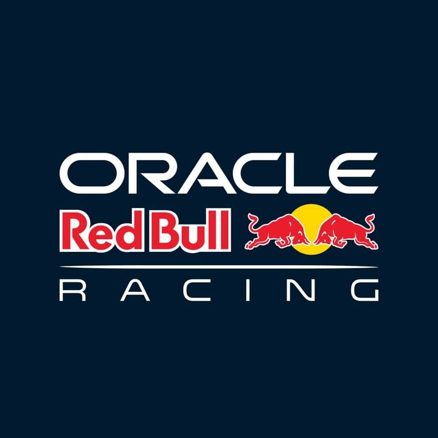
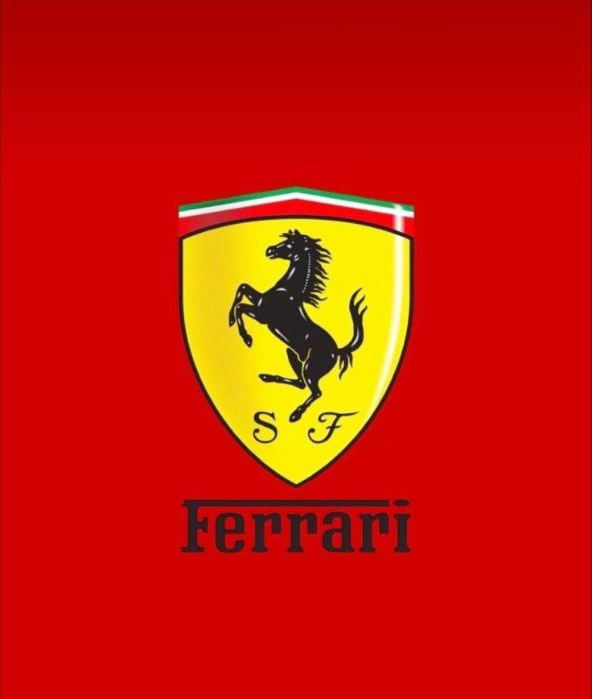
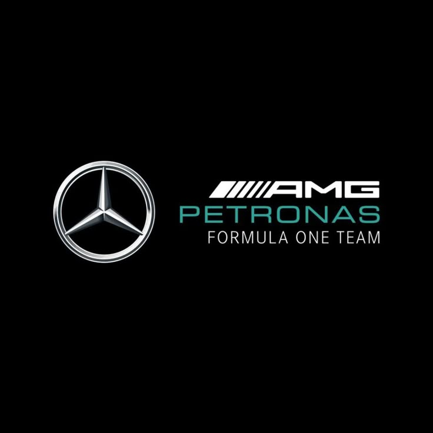
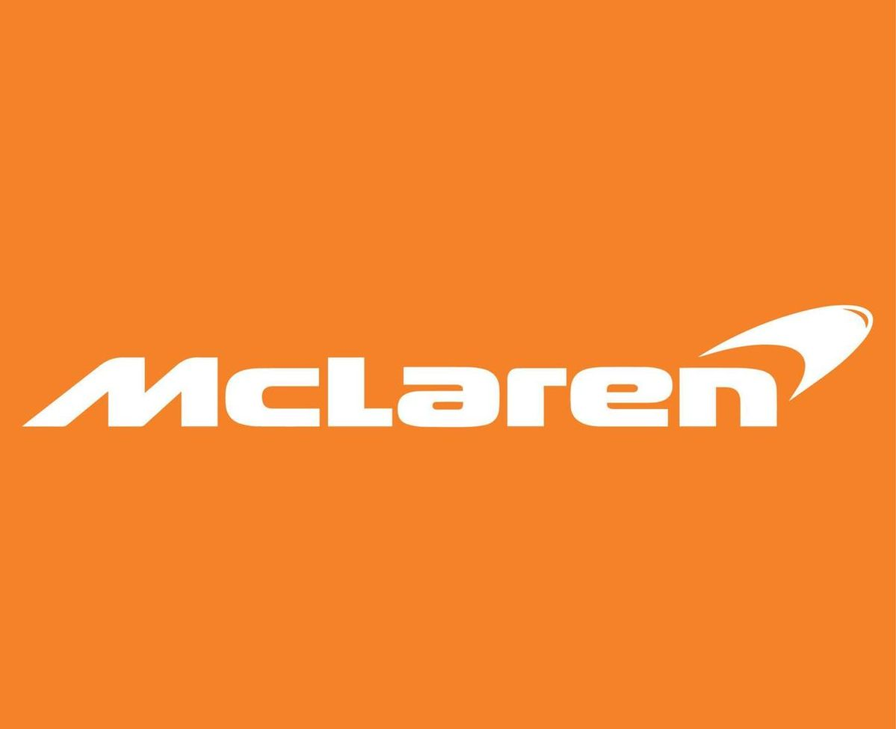
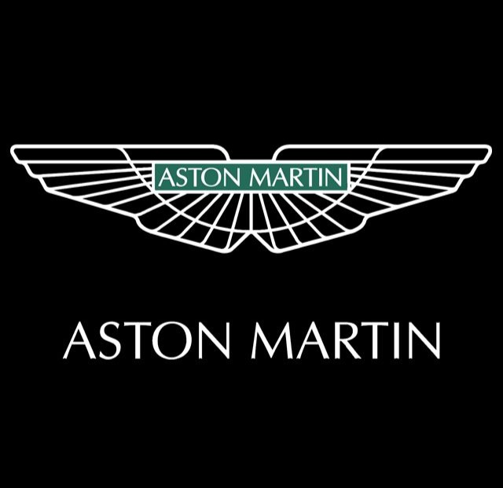
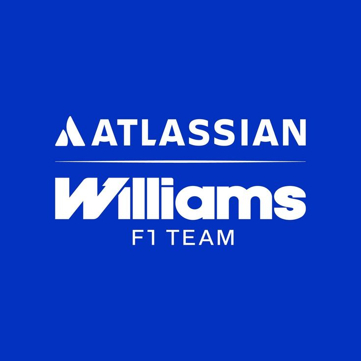
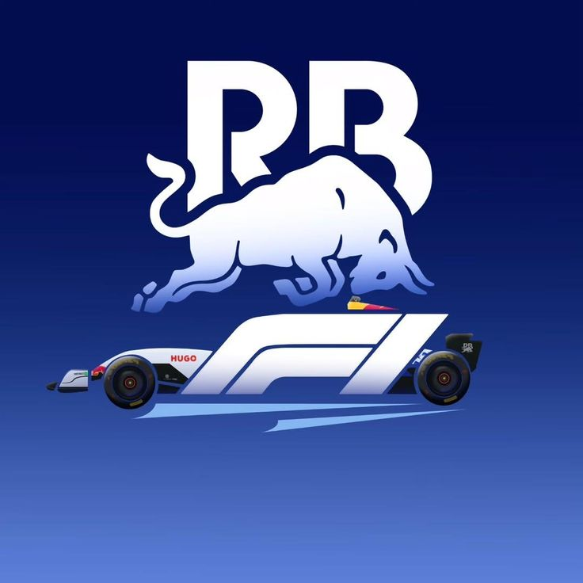
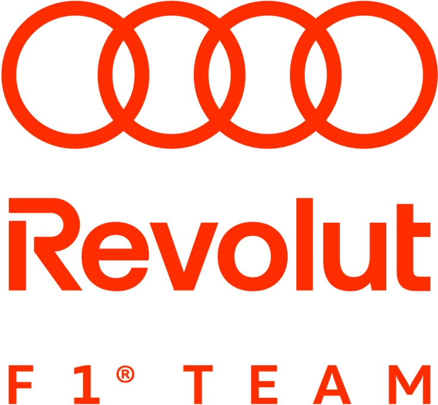
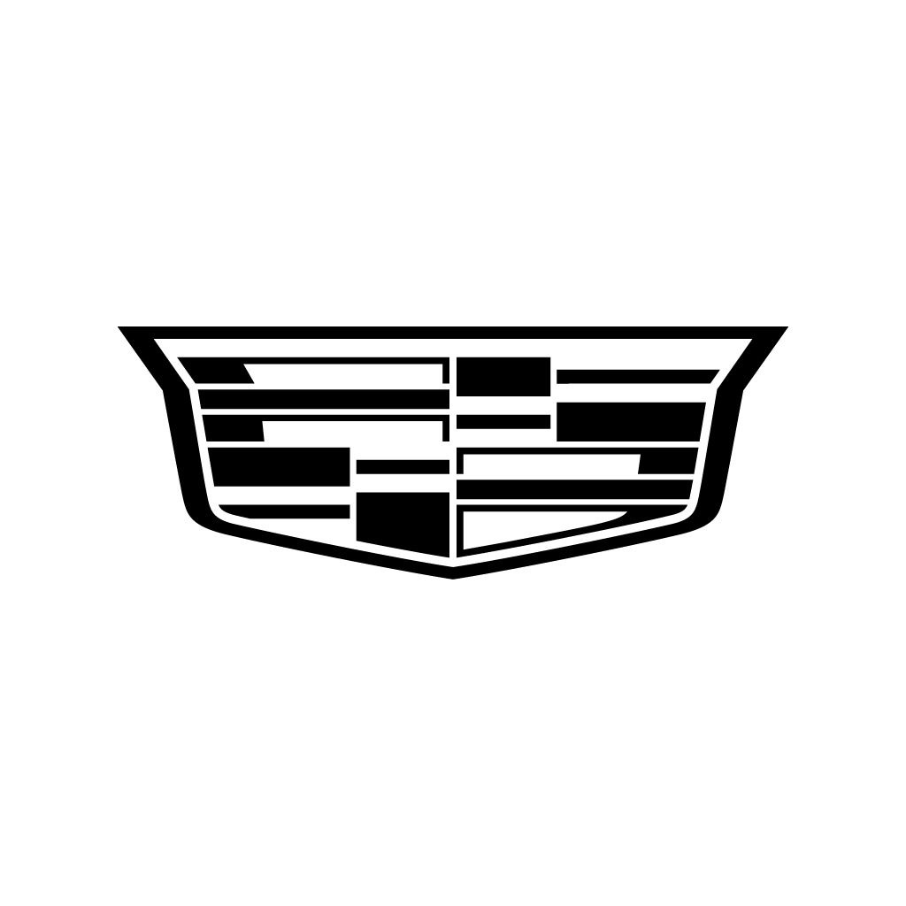

Red Bull Racing
30 pts
Команда продовжує розробку нового боліда та активно співпрацює з Ford над майбутніми двигунами.

30 pts
Команда продовжує розробку нового боліда та активно співпрацює з Ford над майбутніми двигунами.

110 pts
Ferrari демонструє стабільний темп та сильні результати завдяки Leclerc і Hamilton.

180 pts
Mercedes здивували новим болідом та хорошою швидкістю на початку сезону.

94 pts
McLaren стали одними з лідерів старту сезону та регулярно борються за подіуми.

0 pts
Команда продовжує розвивати болід та працює над покращенням стабільності.

23 pts
Alpine демонструють покращення темпу та поступово набирають очки.

5 pts
Williams продовжують оновлення боліда та працюють над аеродинамікою.

14 pts
Racing Bulls активно борються в середній частині чемпіонату та набирають очки.

18 pts
Haas демонструють прогрес у порівнянні з минулим сезоном та стабільніше проводять гонки.

2 pts
Audi продовжують адаптацію до Formula 1 та розвивають новий проєкт команди.

0 pts
Cadillac готуються до повноцінного входу у Formula 1 та активно формують команду.